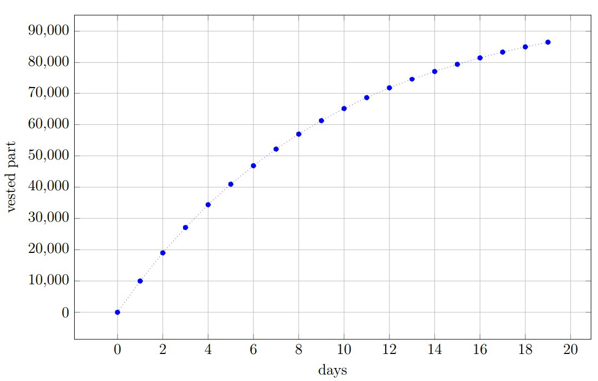

アカウントの状態
アカウントには以下の情報が紐づけられており、これをアカウントの状態(state)と呼びます。
- バランスシート（残高）
- 収穫したブロック数（5.3:ブロックの作成 参照）
- そのアカウントが最初に参照されたトランザクションの含まれるブロック高
- マルチシグアカウントリストと共同署名者リスト（4.3: マルチシグ関連トランザクション参照）
- 重要度を委任されたアカウントの情報（4.2: 重要度委譲トランザクション参照）
- 重要度とNCDawareRank（7: Proof-of-Importance参照）
- 権利確定した（vested）残高（PoIやNEMそのものにとって重要）
NEMネットワークの通貨をXEMと呼びます。 すべてのアカウントのXEM残高は権利確定した(vested)ものとしていない(unvested)ものに分割されます。 アカウントがXEMを受け取った時、それは権利確定していない残高に加えられます。 アカウントがXEMを送金する場合、権利確定残高と権利未確定残高の比率を維持するために、両方の残高が減額します。 加えて、1440ブロックごとにunvested残高の10分の1が権利確定残高に移動します。
ネメシスブロック内2のアカウントは、全残高が権利確定の状態からスタートしました。

2. NEMブロックチェーンにおける一番最初のブロック（BitcoinでいうところのGenesisブロック） ↩